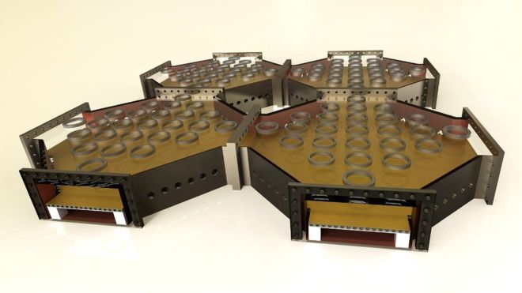

Computación Cuantica
Se aserca una nueva era técnologica
Definición
Las computadoras cuánticas prometen revolucionar la tecnología informática empleando la mecánica cuántica para procesar y resolver problemas millones de veces más rápido que los dispositivos actuales. Pero su complejidad significa que sólo existen como pequeños prototipos de laboratorio.
Hasta ahora.
Un grupo internacional de físicos de la Universidad de Sussex, en Reino Unido, publicó los primeros planos para la construcción de una computadora cuántica modular de gran escala con un extraordinario poder de procesamiento.
El desarrollo podría conducir a la elaboración de nuevos medicamentos cruciales para la vida, ayudar a resolver insondables problemas científicos y ahondar en los misterios del universo.
Por qué IBM te dejará jugar con su computadora cuántica y qué puedes hacer con ella
"Hemos producido planos de construcción, un verdadero proyecto para hacer una computadora cuántica a gran escala", dijo a la BBC Winfired Hensinger, profesor de al Universidad de Sussex.
El primer paso es la construcción de un dispositivo a pequeña escala, con toda la tecnología relevante a una computadora cuántica, que se llevará a cabo en la universidad dentro de dos años, explicó Hensinger.
Luego buscarán socios comerciales para armar una computadora cuántica a gran escala, lo que tomará por lo menos unos diez años por su costo y gran tamaño.
"Va a ser inmensa, posiblemente ocupará todo un edificio", reveló el físico. "Construir una computadora cuántica es algo muy difícil pues está en la frontera de la tecnología pero podemos decir que tenemos un plan de construcción realista".
Como funciona
El sistema hace uso de la mecánica cuántica. Es un concepto de la física que establece que las cosas pueden estar en dos lugares al mismo tiempo.
"Es algo que no se ve con frecuencia pero en el laboratorio podemos hacer que un átomo esté de dos lugares diferentes al mismo tiempo", explicó Hensinger.
En una computadora "clásica" la unidad de información se llama "bit", que puede tener el valor de 1 o 0. Su equivalente cuántico opera con "qubits" o bits cuánticos, lo que quiere decir que pueden tener toda la combinación de valores: 0 0, 0 1, 1 0 y 1 1 al mismo tiempo.
Este fenómeno abre el camino para hacer cálculos múltiples simultáneamente. En lugar de hacer un cálculo de progresión lógica, como en una computadora binaria estándar -donde las respuestas son sí o no, o encendido o apagado- el sistema cuántico hace todos los cálculos al mismo tiempo y entrega la información instantáneamente.